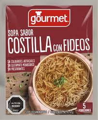

Fideos Instantáneos Gourmet

Los fideos instantáneos gourmet transforman una preparación sencilla en un plato mucho más completo y sabroso. Con verduras frescas, huevo y algunos ingredientes adicionales, podrás disfrutar una comida rápida con un toque especial.